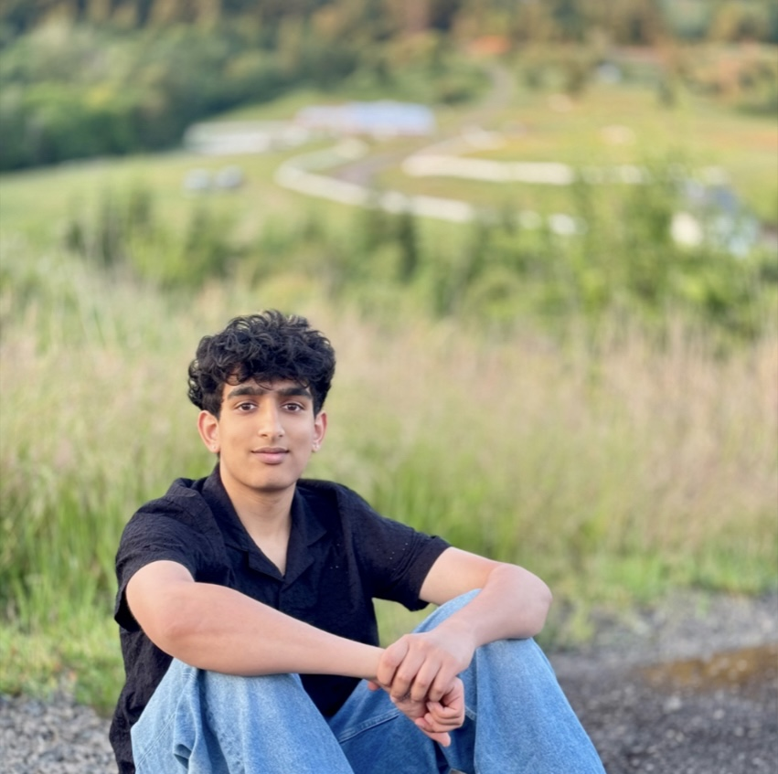

Nikhil Mantha
Hi, my name is Nikhil Mantha and I'm currently a freshman at the
University of Maryland, College Park. I am pursuing a B.S. in Computer Science,
and plan on minoring in either Cybersecurity or Artificial Intelligence. I was born
and raised in Portland, Oregon. Growing up in the Pacific Northwest, I've always
loved the outdoors. I've been on many hikes around the Oregon Coast as well as Mt.Hood
and the Columbia Gorge. I also love to travel - I've been to around 30+ countries, the
most recent one being Iceland in June. Some of my other hobbies include videogames,
photography, and listening to music. Some of my top artists are Tyler The Creator,
Daniel Caesar, Beabadoobee, and Bruno Mars.